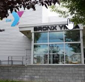

My start in the computer industry was a very funny one. It started in 1983 at the YMCA summer camp when I boarded the school bus headed to a computer courses rather than the one to basketball practice. The instructor coaxed me into trying "logo" a simple program that draws lines based on simple x,y coordinate inputs. I reluctently entered my first command, it worked, and I was instantly hooked. That day, the instructor had to contact my parents to get me to leave the computer lab.
Skipping ahead my love of computers did not stop there. Within 3 months I was on par with my instructors. Within the year I became the youngest YMCA programming instructors (at age 12) sharing my knowledge with other students. My first PC was the Commodore 64, and from there my collection grew to include Amiga, Apple, IBM, and custom rigs. Today, I champion many system integration efforts involving all disciplines of computing platforms. All this because I got on the wrong school bus in the summer of 1983.
Copyright ©